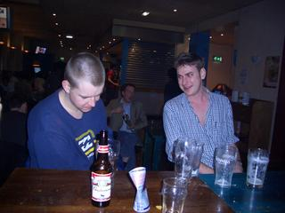

Photos
Any photos you may have of BALLS! activities would be gratefully
received. UCL provides insufficient webspace to store the originals of
everything and movies. Contact Iain if you would like copies and he will sort
something out. I've played with the colour balance of some of these images and
done a spot of red-eye removing.
2022 update: we post on Instagram these days, but it's
funny to see how we've been doing the same old shit as a society since 2002.
I might add some pictures from this decade just to complement though.
Sept-Oct 2022 — Welcome Week! (and stuff)
Some highlights from our Welcome Week events and some bits throughout Term 1


2019 — Winter Arts Festival
Many thanks again to Lorik for these photos.
2017 — Comedy Gala
Many thanks to Lorik for these photos.


20/04/2004 — Hmmmm
Many thanks to Jemma Shafier for these photos.



27/01/2004 — Relaxing
Many thanks to Jemma Shafier for these photos.


22/10/2003 — Student rally
Many thanks to Nicole Starlinger for taking these photos. Here are all of the originals a) as I got them and b) shrunk down. Below are some cropped extracts.